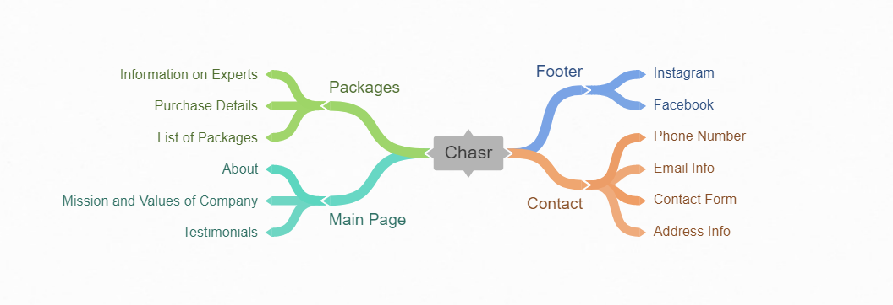

Below is the mindmap used to help develop the flow of the website.
Below are the wireframes for the index page as well as the packages page.
Our logo was originally coloured blue, however we felt that darker colours would be more appropriate to showcase the professionalism of the company site. Therefore, the main colours used where blacks, grays and whites. Mainly hexcodes #FFFFFF and #17141A, among other shades of grey.
Our company logo was made using Rubik, so we continued to use that font in all headers. Furthermore we used Open Sans because we felt it matched with Rubik as well as looking clean and professional.
After the tutorial about wireframes and prototyping, we conducted two more user testing sessions. Leading to a total of three test users. While the first test was using paper prototypes, the following tests used a digital prototype. The following tasks were given:
The main issues we had with our prototypes was important information was near the bottom of the page, meaning users needed to scroll down to see such info. This was a problem since users are not likely to scroll down since they can lose interest if they don't see the point of the page.
The improvements that we incorperated into our website were 1) move the important information near the top of the page thus to engage users more quickly, and 2) to make it more clear what each page means and what the buttons do.